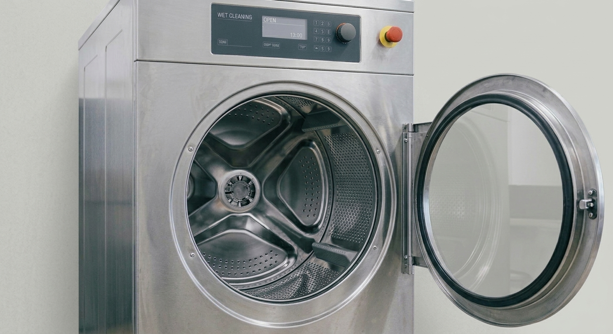
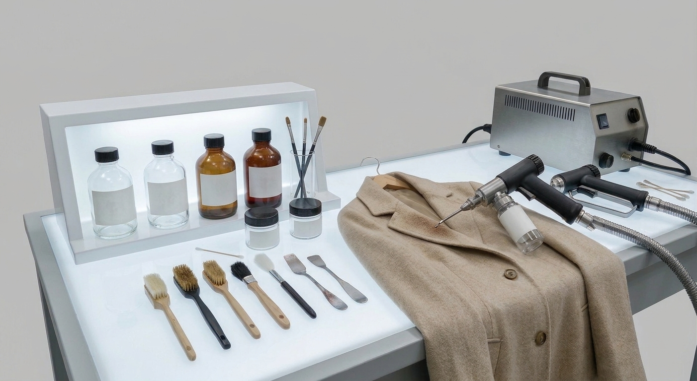
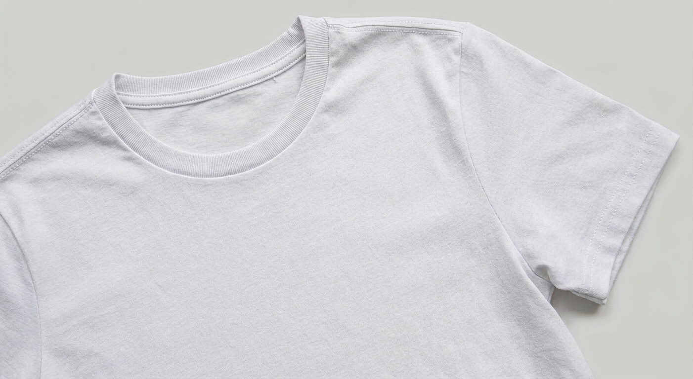

01
プロのウェットクリーニング
ウールやシルク、カシミヤなどもすっきり洗える、プロによる水洗いクリーニングです。軟水を使い、白いものはより白く、色柄物はより鮮やかに仕上げます。
和歌山市秋葉町のクリーニング店。ウェットクリーニングとシミ抜きが得意で、集配無料で暮らしを支えます。
店舗情報を見るご相談は、お電話・メールから
073-444-0931ツバメヤにご相談ください。

ウールやシルク、カシミヤなどもすっきり洗える、プロによる水洗いクリーニングです。軟水を使い、白いものはより白く、色柄物はより鮮やかに仕上げます。

「あきらめていたシミも、ご相談ください」。シミ抜きした衣類は、公式サイトの「匠の技」でも紹介しています。
特殊なシミ抜き(漂白など)は、別途技術料がかかります。

ワイシャツは温水洗いで、肌にもやさしい天然の糊を使用。クリーニング師免許を持つスタッフが、一着ずつ手仕上げします。
Yシャツ495円(税込)。素材により料金は変わります。
集配は無料です。毛布・布団・カーペットなどのかさばる品も、お気軽にご相談ください。
白衣・ユニフォームなど業務用の定期集配・宅配にも対応しています。
シミ抜きは、ここにお願いしています。
先代の時からお世話になってます。大事なものはよそには渡せません。ここしか出しません。
とても愛想がよいご夫婦です！色移りした服があり、初めての来店だったのですが、一緒に悩んでいただき、さらにアドバイスまでしてもらいました。知識が豊富で、どんな服でも安心して任せられます。
衣替えのたびに、しまう場所に困る。そんなお客様に向けた、新しいパックのご提案です。
※このセクションは企業へのご提案です。現在のサービスではありません。